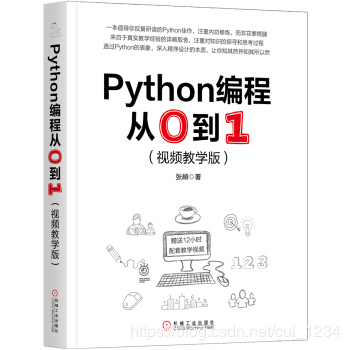

在表达式的求值过程中，对状态的改变称为表达式的副作用。Python中内建的各种运算符（此处是狭义的含义，如加减乘除比较等运算符，并不包含用户自定义的运算符或函数）是没有副作用的，但各种函数调用时常带有副作用（比如各种输入输出函数）。在使用带有副作用的表达式构建复杂表达式时要格外留意，因为这可能带来程序员容易忽视的行为。如：
if expA and expB :
...
这条语句用来测试表达式A B都为真的条件。expA and expB的计算具有短路性质，即如果A为假则整个表达式已然能够判断为假，表达式B不会被求值。如果表达式B包含函数调用，则意味着该函数不一定被调用。
不过总体说来，Python中副作用带来的麻烦并不多。程序员只要不在复杂表达式中嵌套带有副作用的函数即可避免这些容易混淆的情形。这种编码风格也能很容易遵守。[1]
[1] C程序员往往需要利用各种副作用（比如自增、赋值）写出简洁紧凑的程序，但在Python中，由于语法本身已经提供足够的简洁性，这门语言被刻意设计成避免这些写法。
这是一本很有趣很有趣的Python入门书，墙裂推荐。
